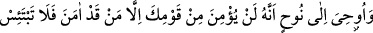
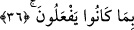

uzun bir süre rahat edecekler.”[124] buyurmuştur.
Ey dânâ gönül, bu alçak dünyanın gamı ne zamana kadar?
Yazık o güzele ki bir çirkine âşık olmuştur.
36. Nûh’a vahyolundu ki: “Kavminden inanmış olanlardan başka kimse
inanmayacak, onların yaptıklarından dolayı üzülme!”
“Nûh’a vahyolundu ki:” İnkarda ısrar eden “kavminden inanmış olanlardan”
kendilerinden îmân etmeleri beklenip de inanmış bulunanlardan “başka kimse
inanmayacak.” Bu ifade Nûh (a.s.)’ı kavminin îmânından ümid kestirmekte;
inanmalarının beklenmesi doğru olmayan muhâl gibi bir şey olduğunu bildirmektedir.
Ebu’s-Suûd (r.h.) der ki: “Buradaki istisnâ “Geçmişte olanlar dışında” (en-Nisa,
4/22,23) âyetindeki gibidir ki Nisâ sûresinin son taraflarında geçmişti.”
Müftî Sa‘dî ise şöyle der: “Şayet “inanmış olanlar” ifadesiyle ilgili olarak, “iman
yenilenmez, aksine dâima îmânlı olunur. O halde nasıl istisnayla birlikte gelebilir?”
denirse şöyle cevap veririz: “Şurası muhakkaktır ki hiç kesintiye uğramayan şeylerin
devam etmesi, başlangıç hükmündedir. Bu sebepledir ki biri, giymekte olduğu bir elbise
için; “bunu giymeyeceğim” diye yemin etse ve hemen üstünden çıkarmasa yemininde
durmamış olur. Yeminler esas itibâriyle örfe dayanırlar.”
el-Kutbü’l-Allâme der ki: “Îman edenlerden başka” ifadesi îmân etmeye istidadı
bulunan, îmân etmesi beklenen demektir. İfadedeki îmândan, bi’l-fiil îmân
kastedilmemektedir.”
“Onların yaptıklarından dolayı üzülme!” yâni bunca uzun süredir yapageldikleri
yalanlama ve eziyet vermeden dolayı tasalanma, zelil birinin hüznüne benzer bir
üzüntüye kapılma! Yaptıkları artık sona erdi. Onlardan intikam alma vakti geldi.
Hz. Peygamber (s.a.)’in şöyle buyurduğu rivayet edilir: “Nûh, kavmiyle mücâdele
ederken kavmi tarafından bayılıncaya kadar dövüldü. Ayılınca: “Allah’ım! Kavmimi
doğru yola ilet. Çünkü onlar bilmiyorlar.” diye dua etti.”
Allah Teâlâ tarafından bu âyet nâzil olunca kavmine şöyle bedduâ etti: “Rabbim!
Yeryüzünde kâfirlerden hiç kimseyi bırakma!” (Nûh, 71/26)
Mesnevî’de şöyle denilir:
Peygamberlerin sabırsızlığı, Hakk’ın emri iledir.
Yoksa onların hilmi kötülerin yüklerini de çeker.
Onlar, kötülüklere tahammül ede ede tabiatlarını değiştirdiler.